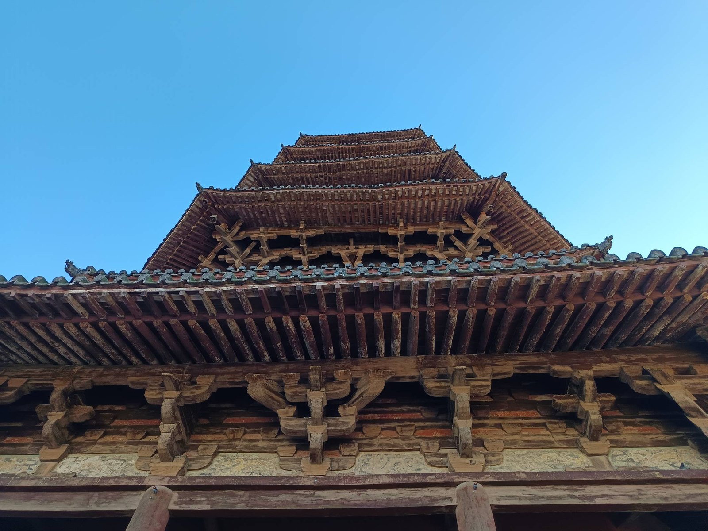
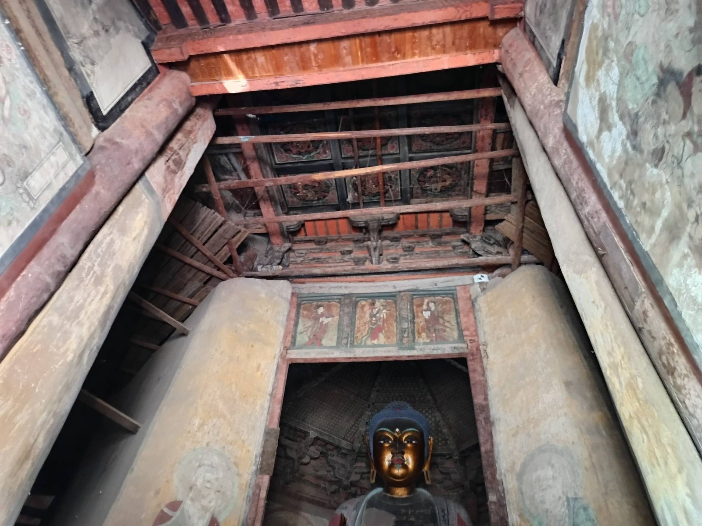
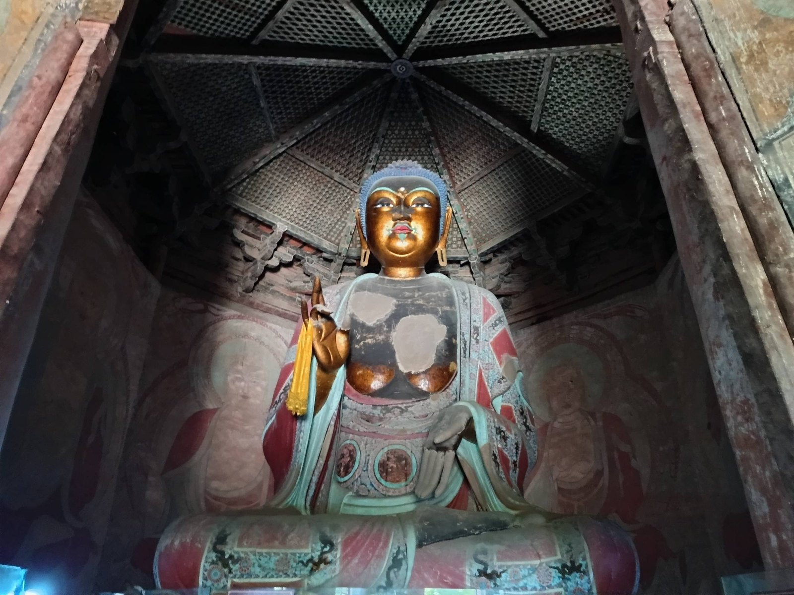
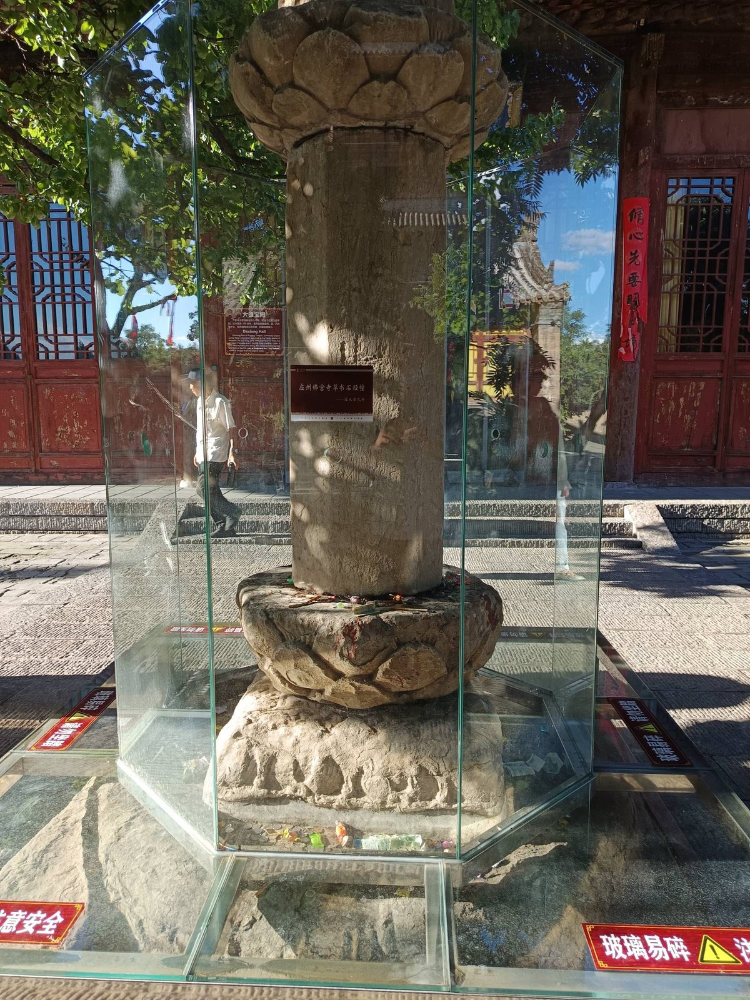

进大同之前，那天下午先拐去了城南七十多公里的应县。
车一进县城，它先出现在平原上——
深色的木塔，比想象中大，也比想象中旧。
第一眼没什么诗意，就是心里咯噔一下：
这么大一个木头东西，怎么就敢在华北平原上，站一千年。
走近了才发现，整座塔是由"花"组成的。五层六檐，每一层檐下都挤满斗拱——同一个逻辑，长出五十多种样子，全塔将近五百朵，一朵一朵全是木头，不用一根钉子。资料里叫它"斗拱博物馆"，走近看，更像走进一片木头的花田。
1933 年，梁思成来测绘，在给林徽因的信里写：绝对的 overwhelming，好到令人叫绝，喘不出一口气来半天。九十年后站在同一片屋檐下，脖子仰到酸，症状一模一样。

仰头数木头，数到脖子酸，一朵也没数清·the brackets
塔只让人上一层。门一推开，先看见的不是佛的脸，是佛的头顶——上方悬着一座八角藻井，像一口倒扣的井，井口接着天花板。佛在这口井下面，坐了九百七十年。
他太高了，11 米，进了殿门就得一直仰着脖子。左手与愿印，右手说法印，须弥座底下有八个力士扛着，每个的表情都有点咬牙切齿。两侧墙上的壁画里，供养人队伍里混着三位萧姓皇后——大辽真正的掌门人们，排队排在佛的后面。

他头顶上的天花板，是辽代的·the ceiling above him

他坐了九百七十年，第 970 年我在·the 11-meter buddha
塔后的大雄宝殿是清代重修的，殿前立着一座八角石经幢，玻璃罩子罩着，底座上落满游客投的硬币。经幢是辽代的，和塔同岁——一柱石头，顶上雕一圈莲蓬样的莲花。九百多年，石头也开花了。
投硬币的大概都在许愿。我站在它面前想的是另一件事：全寺上下，殿是清代重建的，钟鼓楼是明代的，只有这座塔，和这柱石头，是从大辽原样活到今天的——像两个活过一切的老朋友，谁也不用安慰谁。

石头也开了花·the lotus of stone
出来时走的是北门。回头看，塔身上那几块匾正好都在：
从下往上——法海慧莲，乾隆五十一年；永镇金城，光绪三十一年；
中立不倚，雍正四年；灵山未散，民国十八年。
字越挂越新，塔越站越老。
南面高处还有几块更凶的："峻极神工"是朱棣写的，"天下奇观"是朱厚照写的，
"释迦塔"三个大字是金代的，公元 1194 年，塔的本名凭证。
九百七十年，四十多次地震，好几场战火，二层以上已经慢慢歪了，
讨论修缮的会开了一轮又一轮，谁也不敢先动它。
它不需要谁动，它只需要站着。
没有一根钉子，
它一个人站了九百七十年。